Chapter 2 · Part 1 — Leaving Again
“No one’s here!” Annie shouted down.
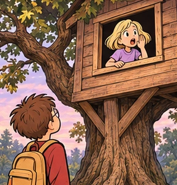
Jack thought about going home. Then he thought about all the books in the tree house.
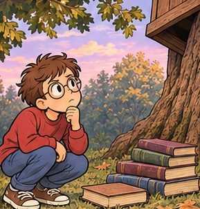
He started up the ladder. When he was nearly to the tree house, he saw light in the distant sky. Dawn was starting to break.
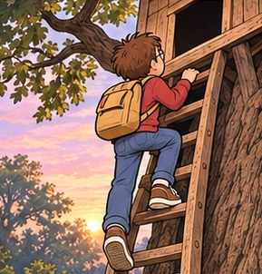
He crawled through a hole in the floor and took off his backpack.
It was dark inside the tree house.
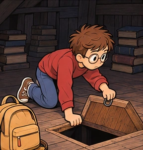
Annie was shining her flashlight on the books scattered about.
“They’re still here,” she said.
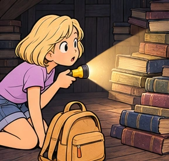
She stopped the light on a dinosaur book. It was the book that had taken them to the time of the dinosaurs.
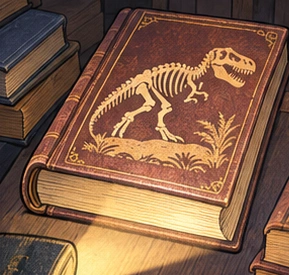
“Remember the Tyrannosaurus?” asked Annie.
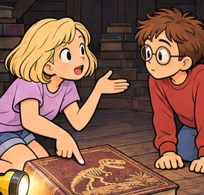
Jack shuddered. Of course he remembered! How could anyone forget seeing a real live Tyrannosaurus rex?
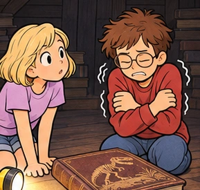
The light fell on a book about Pennsylvania. A red silk bookmark stuck out of it.
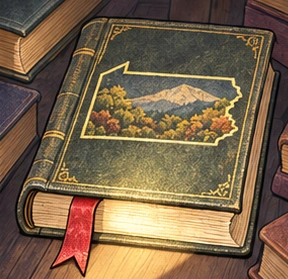
“Remember the picture of Frog Creek?” said Annie.
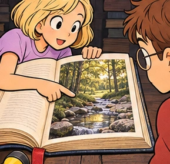
“Of course,” said Jack. That was the picture that had brought them home.
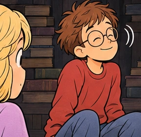
“There’s my favorite,” said Annie.
The light was shining on a book about knights and castles. There was a blue leather bookmark in it.
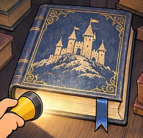
Annie turned to the page with the bookmark. There was a picture of a knight on a black horse. He was riding toward a castle.
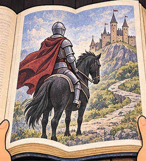
“Annie, close that book,” said Jack. “I know what you’re thinking.”
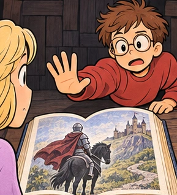
Annie pointed at the knight.
“Don’t, Annie!”
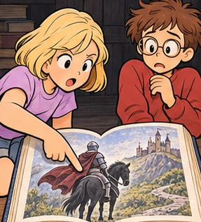
“We wish we could see this guy for real,” Annie said.
“No, we don’t!” shouted Jack.
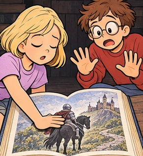
They heard a strange sound.
“Neeee-hhhh!”
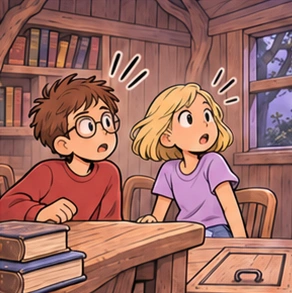
It sounded like a horse neighing.
They both went to the window.
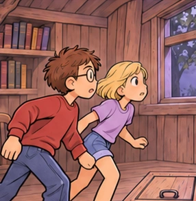
Annie shined the flashlight down on the ground.
“Oh no,” whispered Jack.
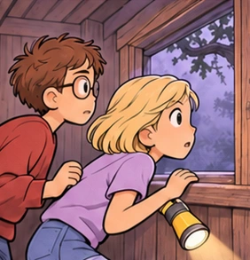
“A knight!” said Annie.
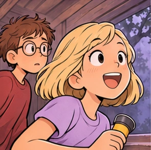
A knight in shining armor! Riding a black horse! Through the Frog Creek woods!
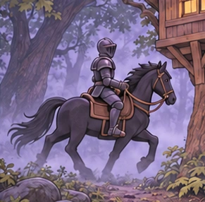